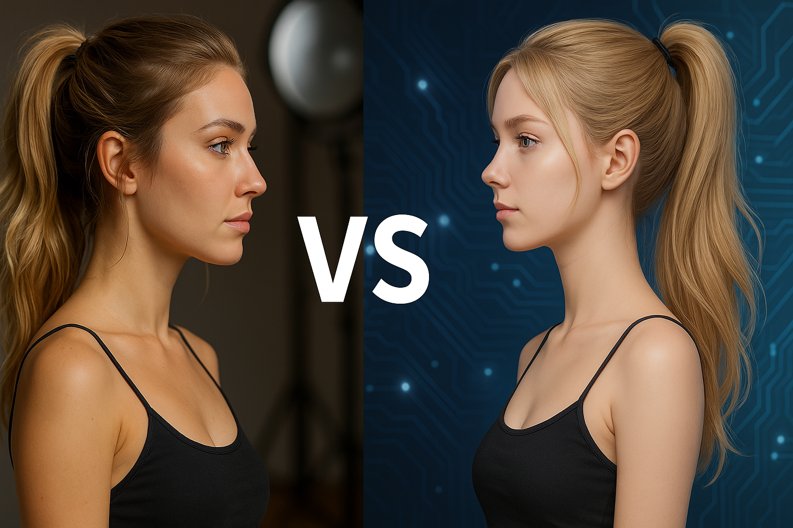

Modelos IA vs Modelos Reales: Futuro, Desafíos y Cómo Triunfar en el Modelaje
Hablemos de algo que está sonando mucho: la inteligencia artificial (IA) metiéndose hasta en el modelaje. Ya sabes, ahora pueden crear modelos digitales que parecen super reales, y eso cambia las cosas, sobre todo si sueñas con ser modelo. ¡Vamos a ver qué onda con esto!
¿Las modelos de IA nos quitan el trabajo?
Pues mira, ya hay marcas usando modelos hechas por computadora. ¿Y por qué? Principalmente porque es más fácil y barato para ellas.
- Menos gente, menos lío: Imagínate no tener que contratar fotógrafos, maquillistas, estilistas… ¡ni buscar dónde hacer las fotos! Se ahorran mucho dinero y organización.
- Disponibles siempre y como quieran: Una modelo digital está lista 24/7 y la pueden cambiar como se les antoje: estilo, ropa, ¡todo! Sin horarios ni viajes.
- ¡Rapidísimo!: Pueden sacar campañas y fotos mucho más rápido para estar al día con lo que se usa.
¡Pero lo humano es mejor! Tu toque especial como modelo
Ok, la IA suena muy pro, pero… ¿y las modelos de carne y hueso? ¡Ahí está el detalle! Hay cosas que una computadora no puede hacer igual:
- Sentir y conectar: Tú, como modelo, transmites emociones de verdad. Una mirada, un gesto… eso conecta con la gente de una forma que un programa no logra. ¡Esa es tu magia para ser modelo!
- La experiencia cuenta: Saber moverte, entender lo que quiere el diseñador, improvisar… ¡eso vale oro! Es más que solo pararse bonito.
- Tu propia marca: Tú creas tu marca personal, hablas con tus seguidores, tienes tu historia. La gente te sigue por quién eres, no solo por cómo te ves.
- Lo real es cool: A veces, ser perfectamente imperfecta es lo que te hace única. Lo digital puede ser muy perfecto, ¡pero a veces hasta aburrido!
¿Unas reemplazan a otras? ¡Nah! Hay espacio para todas
La verdad, no creo que las modelos de IA vayan a borrar del mapa a las humanas. Más bien, parece que cada una tendrá su lugar. Piénsalo así:
- ¿Cuándo usar IA?: Quizás para tiendas online con muchísima ropa, para probar ideas rápido, o cuando no se necesita esa conexión tan emocional.
- ¿Cuándo necesitas una modelo real?:
- Moda top y de lujo: Ahí se busca arte, emoción, ¡feeling!
- Cosas que se sienten: Maquillaje, cremas, perfumes… ¡Necesitas ver cómo quedan en piel real! Aunque le metan edición, la base tiene que ser auténtica.
- Campañas con corazón: Si quieres mandar un mensaje social o tocar fibras sensibles, necesitas gente real.
- ¡En vivo y a todo color!: Pasarelas, eventos… ¡ahí no hay pierde!
¡A ponerse las pilas! Adaptarse y pedir reglas claras
Entonces, ¿qué hacer? ¡Moverse!
- Échale ganas a aprender: No solo a posar. Aprende de comunicación, redes sociales, actuación, a conducir un tanque, un avión… ¡Todo lo que te haga brillar más!
- Crea tu marca: Usa tus redes para mostrar quién eres, qué te gusta, qué piensas. ¡Que la gente te conozca!
- Sé super pro: Ser puntual, adaptable, buena onda con el equipo… eso siempre suma puntos.
Y también, hay que pedir que las cosas sean claras:
- Que nos digan: Las marcas deberían decir si la modelo es real o IA, sobre todo con productos como cosméticos. ¡Transparencia!
- Juego limpio: Poner reglas para que no se usen imágenes falsas para engañar o se aprovechen de la imagen de alguien sin permiso.
En resumen: ¡Tu futuro como modelo sigue en tus manos!
La IA es una herramienta nueva y potente, ¡sin duda! Va a cambiar cosas en la industria. Pero ¡ojo!, no elimina lo valioso que eres tú, el talento humano. Si te preparas, trabajas en tu marca personal y le sacas jugo a eso que te hace única (¡tu humanidad!), no solo vas a seguir en el juego, sino que puedes romperla en el modelaje. Se trata de adaptarse, ser diferente y defender lo auténtico. ¡Así que ánimo!